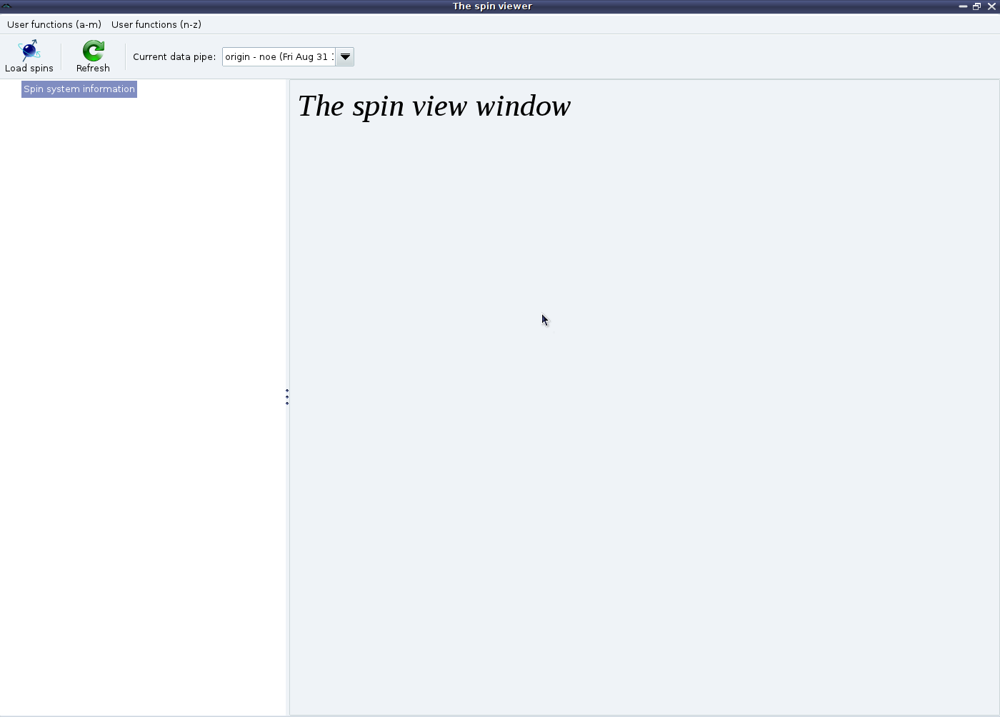

Next: NOE GUI mode - Up: The NOE auto-analysis in Previous: NOE GUI mode - Contents Index
You should then see the blank analysis tab:
|

|
The first thing to do now is to set the NMR frequency label. This is only used for the name of the NOE output file. For example if you set the label to ``500'', the file noe.500.out will be created at the end of the analysis.
You can also choose to change the ``Results directory'' where all of the automatically created results files will be placed. These two steps are unique to the GUI mode.
The relax user manual (PDF), created 2013-03-24.